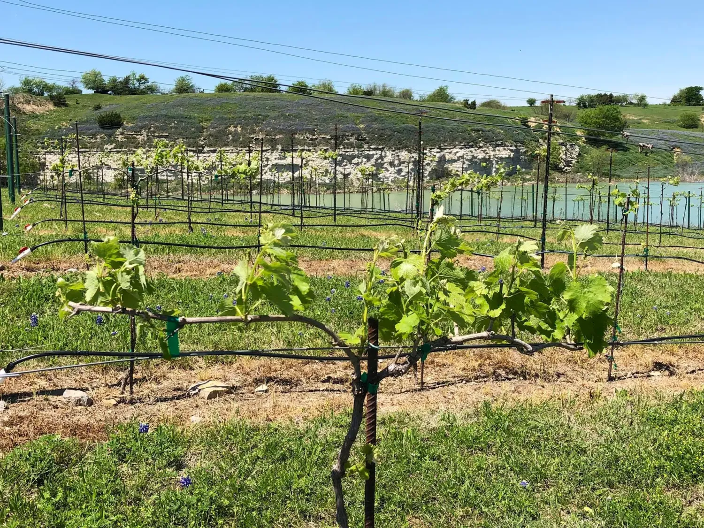
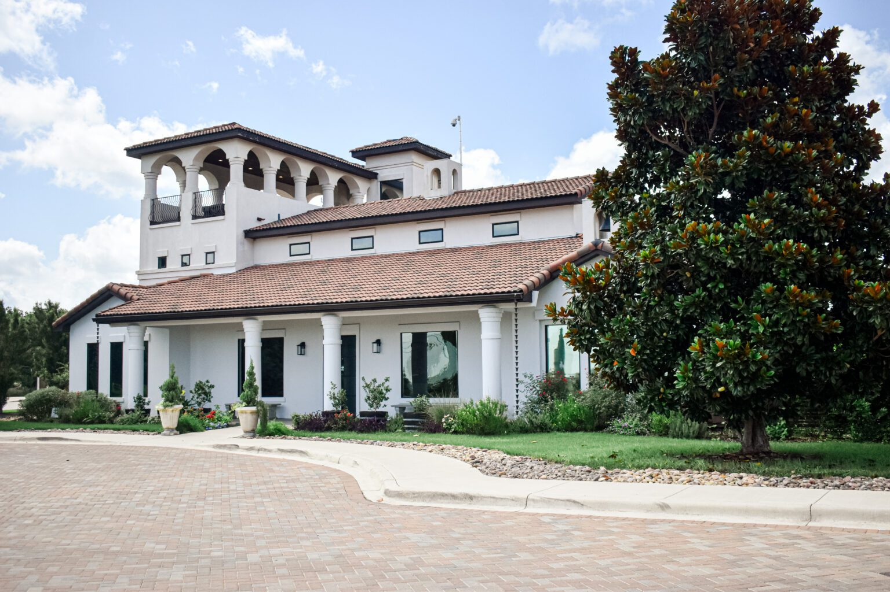
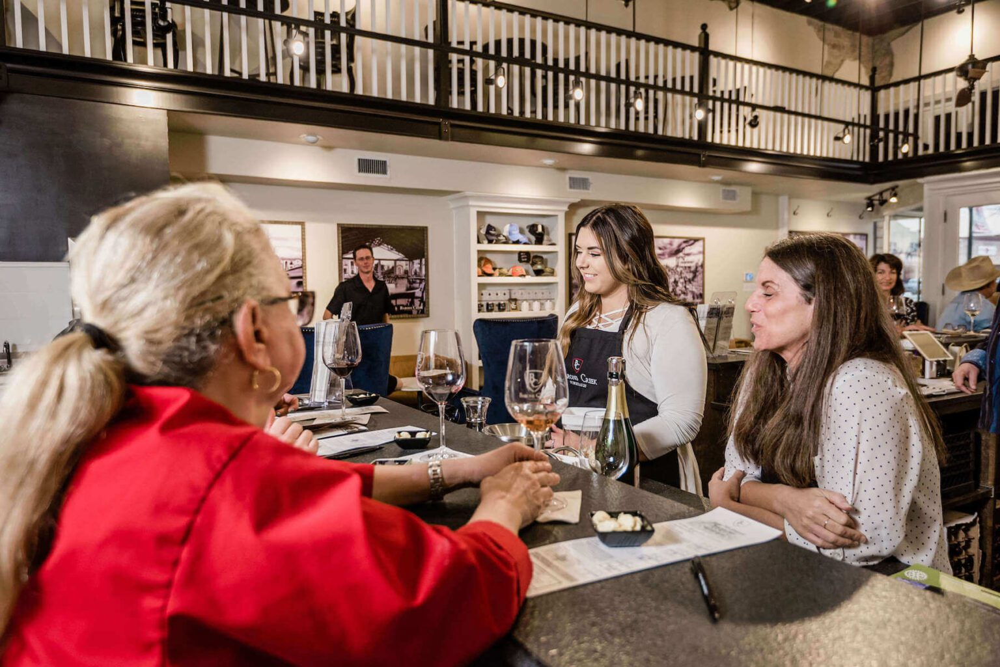
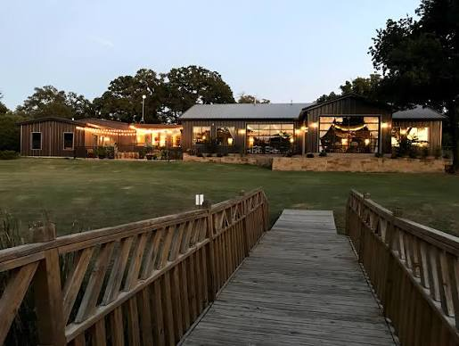
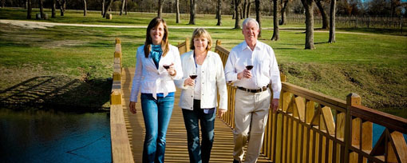

Texas Wineries
Cresson Bluff Winery

About Cresson Bluff Winery
Tucked away where the hills meet the sky and the lake sits below, is a place where time slows and the beauty of the land speaks through every glass. What began as a dream among sun-dappled vines, has grown into a heartfelt craft—an expression of family, heritage, and the simple joy of good wine shared among friends.
Our vines cling to the rolling hills next to the spring-fed lake of Cresson Bluff, their roots reaching deep into the soil, drawing from the character of this serene place—its seasons, its winds, its whispers.
Each harvest we gather not just grapes, but moments: early morning light over the vineyard, the hum of harvest laughter, the scent of oak and earth mingling in the cellar.
At Cresson Bluff, winemaking is more than a process—it’s a love story between land and hand. Every bottle carries a touch of our landscape’s wild grace and the warmth of those who tend it. We invite you to slow down, pour a glass, and taste the soul of the bluff itself.
Cresson Bluff Winery — where romance lingers in the air, and every sip tells a story.
Visit Cresson Bluff Winery's Website
Baron's Creek Winery

Enjoy Texas' best wine experience in the heart of the Hill Country. We look forward to sharing our wines, winery, and vineyards with you. We strive to provide each of our visitors with an experience that would make even the most discriminating nobility feel at home. We offer tastings to accommodate wine lovers of every distinction.
Tastings are $30/person. For group sizes larger than 10 please contact Tastings@BCV.Wine
Visit Baron's Creek Winery's Website
Lost Oak Winery

Lost Oak Winery has deep roots in Texas wine. We have committed decades to growing the industry and producing the highest quality, hand-crafted Texas wine and experiences, keeping it simple and approachable.
Lost Oak’s origin began in the 1950s when founder Gene Estes made wine in a bathtub in his native Abilene, Texas. You see, Abilene was a dry county that had no liquor stores so he had to seek creative diversion. It became a passion. After living and working in Alsace, France, crafting the art of winemaking, he founded Lost Oak Winery. Fortunately, his immersion in the wine industry connected the winery with Jim Evans, a remarkable Texas native winemaker, one of the best in the art, who now boasts over 40 vintages making Texas wine.
In 2007, Gene and his step-daughter Roxanne, joined forces to grow the family business. Now, the next generation is at the helm. Roxanne’s drive and passion has taken her from behind the bar at the tasting room to the President of the company. Leading the team to be one of the most established, solid and influential wineries in Texas. Woman-owned and woman-operated, Lost Oak continues the mission, to create high-quality, hand-crafted Texas wine and experiences with fun and simplicity.
In collaboration with major universities, Lost Oak viticulture team worked in experimentation and development of varieties that adapt best to Texas terroir and climate like Blanc du Bois, Shiraz, Viognier and Tempranillo.
You think Texas is big? We are one of the Tallest! In 2017, Lost Oak Winery was awarded as for its leadership role in the dedication to, support of and promotion of the Texas wine industry. Next to leadership is great wine. This is just one of the many awards given by the most esteemed international wine competitions in America, San Francisco International, San Francisco Chronicle, Lone Star, and many more. Double-gold Viognier. Double-gold Cabernet Franc. Double Gold Orange Muscat. Double Gold Petit Verdot. And the list goes on.
Visit Lost Oak Winery's Website
Fat Ass Ranch & Winery

The Story Behind Fat Ass Ranch Winery & Brewery in Fredericksburg, Texas
It all began with a dream and a slice of the Texas hill country. Gail & Jennie McCulloch, our founders, tied the knot and settled into a life that blended love, laughter, and the fruits of the land. This dream grew into what we now cherish as Fat Ass Winery & Brewery – a name inspired by a moment of humor and a dash of reality when they noticed their beloved donkey, Jackson, growing as sturdy as the horses!
Those early days at the ranch were filled with the simple pleasures of country living. The meals were hearty, the laughter was abundant, and the ranch dog enjoyed the bountiful life, gaining a little extra ‘character’ around the edges.
Gail & Jennie’s vision was rooted in the joy of sharing. They wanted to create a place where every visitor felt like family, where the wine flowed as freely as the stories, and where a day spent was a day remembered. Their passion for winemaking, coupled with a knack for creating unforgettable experiences, turned Fat Ass Winery & Brewery into a beloved destination in the Texas hill country.
So, here’s to the journey, to the stories yet to be told, and to every bottle, glass and craft that brings us together. We invite you to be part of our continuing story, where tradition meets innovation, and where every guest is part of our Fat Ass family.
Welcome to Fat Ass Ranch & Winery – where every visit is an experience, every glass is a celebration, and every guest is family.
Visit Fat Ass Ranch & Winery's Website